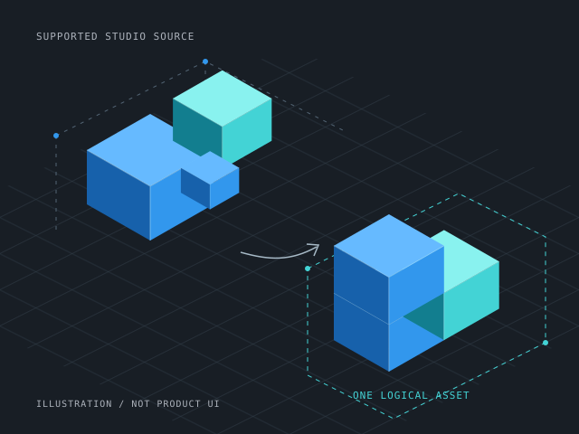

Keep supported groups together
Compatible appearance groups can become separate ordered outputs within one logical Preview. Inspect the result before publishing.
A Roblox Studio creator tool
Turn supported Roblox Studio builds into inspectable, reusable mesh assets.
Build with the tools you already like. MeshMogul takes over when your Studio build is ready to become a mesh asset.
Founding · 1.1.0 Manual Studio publish handoff

Stay in your building flow
Start with a supported prop, modular piece, or model. Inspect what can become a mesh before committing to publication. Keep your original source for the next iteration.
MeshMogul creates a retained Preview, guides an explicit publishing handoff, and remembers confirmed outputs in a local Assets library for insertion later.
Walk through every step →Founding · 1.1.0
Compatible appearance groups can become separate ordered outputs within one logical Preview. Inspect the result before publishing.
Supported materials and transparency states can stay separated. This does not promise arbitrary texture or PBR fidelity.
A logical Assets record keeps its ordered mesh IDs. Complete records can insert as one MeshPart or a grouped Model.
Good places to start
Examples of workflows to try with supported geometry; these are not conversion guarantees.
A simple crate, sign frame, or stylized piece built from supported Parts.
A supported wall section or trim piece you want to insert again.
Supported ProceduralModel output after generation settles and preflight passes.
See the process
Plugin screenshots and a walkthrough will be added here. The illustration above is explanatory artwork.
Know the boundary
Direct Union conversion is excluded. Publishing uses a manual Studio Command Bar handoff. Assets are remembered locally, without team or cloud sync.
Get MeshMogul
MeshMogul is available on Roblox Creator Store. Check supported inputs before planning a conversion.
Get MeshMogul on Creator Store →Browse practical Studio guides →